LabVIEW stores data in memory for controls, indicators, wires, and other objects depending on the data type of the object.
LabVIEW stores Boolean data as 8-bit values. If the value is zero, the Boolean value is FALSE. Any nonzero value represents TRUE.
Byte integer numbers have an 8-bit format, signed and unsigned.
Word integer numbers have a 16-bit format, signed and unsigned.
Long integer numbers have a 32-bit format, signed and unsigned.
Quad integer numbers have a 64-bit format, signed and unsigned.
Fixed-point numbers have a 64-bit format, signed and unsigned. LabVIEW signs extend fixed-point numbers to 64 bits even when the extended bits are not significant.
Single-precision floating-point numbers have a 32-bit IEEE single-precision format.
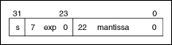
Double-precision floating-point numbers have a 64-bit IEEE double-precision format.
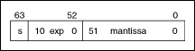
Extended-precision floating-point numbers have an 80-bit IEEE extended-precision format.
|
Note��In some cases, extended-precision floating-point numbers can have a 64-, 96-, and 128-bit IEEE extended-precision format depending on the computer processor. Most Intel and AMD processors use an 80-bit format. |
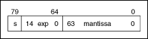
Complex single-precision floating-point numbers consist of real and imaginary values in 32-bit IEEE single-precision format.
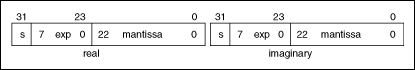
Complex double-precision floating-point numbers consist of real and imaginary values in 64-bit IEEE double-precision format.
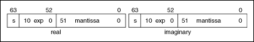
Complex extended-precision floating-point numbers consist of real and imaginary values in IEEE extended-precision format.
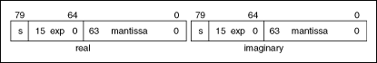
For floating point and complex numbers, s is the sign bit (0 for positive, 1 for negative), exp is the biased exponent (base 2), and mantissa is a number in the [0,1] range.
LabVIEW stores a time stamp as a cluster of two quad integers, a signed integer and an unsigned integer. The signed integer (64 bits) represents the time-zone-independent number of complete seconds that have elapsed since 12:00 a.m., Friday, January 1, 1904, Universal Time [01-01-1904 00:00:00]. The unsigned integer (64 bits) represents the fractions of seconds.
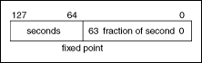
Refer to the following support document at ni.com for more information about time stamps.
LabVIEW stores arrays as handles, or pointers to pointers, that contain the size of each dimension of the array in 32-bit integers followed by the data. If the handle is 0, the array is empty. Because of alignment constraints of certain platforms, a few bytes of padding might follow the dimension size so that the first element of the data is correctly aligned. If you write a shared library that uses a LabVIEW array, you might need to adjust the size of the handle.
The following illustration shows a 1D array of single-precision floating-point numbers. The decimal numbers to the left represent the byte offsets of locations in memory where the array begins.
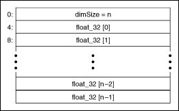
The following illustration shows a 4D array of 16-bit integers.
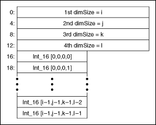
In LabVIEW, 1D and 2D arrays are aligned in memory. This aids in performance for linear algebra operations and operations involving the matrix data type.
LabVIEW stores strings as pointers to a structure that contains a 4-byte length value followed by a 1D array of byte integers (8-bit characters), as shown in the following illustration. If the handle, or the pointer to the structure, is NULL, LabVIEW treats the string as an empty string, which is the same as a string with length value of zero. Because LabVIEW uses the length value and not a terminating character to determine the end of the string, you can embed all characters that include the NULL character, or ASCII character 0, in the string at any point. When passing LabVIEW strings to external code that expects a C string, the embedded NULL characters cause the code to interpret the string as terminating at the first NULL character.
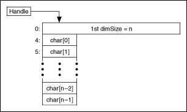
A LabVIEW path is a pointer to an opaque data structure that contains a path type and path components. The path type is 0 for an absolute path, 1 for a relative path, and 3 for a Universal Naming Convention (UNC) path. A UNC path occurs on Windows only and has \\<machine name>\<share name>\ rather than a drive letter as its first component. Any other value of path type indicates an invalid path.
Use the following functions to access information about a path:
Use the following functions to add elements to a path:
Use the following functions to create a new path:
Use the FDestroyPath() function to dispose of a path.
Use the following functions to convert a path to or from a textual form:
Use the following functions to compare two paths:
Using LabVIEW Manager Functions in Shared Libraries
LabVIEW stores cluster elements of varying data types according to the cluster order. You can view and modify the cluster order by right-clicking the cluster border and selecting Reorder Controls In Cluster from the shortcut menu. LabVIEW stores scalar data directly in the cluster, and it stores arrays, strings, and paths indirectly in the cluster. Because of alignment constraints of certain platforms, LabVIEW might add some bytes of padding to the end of a cluster in an array so that the beginning of the next cluster is aligned correctly. If you write a shared library that uses an array of clusters, you must account for this padding if you adjust the size of the handle to the array.
The memory layout of a cluster depends on the platform you are running. LabVIEW may add padding between cluster elements so that those elements are aligned to certain address boundaries. Address boundaries relate to the concept of natural alignment. A piece of data is aligned on its�natural�boundary if the address at which it begins is a multiple of the size of the data. For example, a 4-byte integer is aligned naturally if it begins at an address which is a multiple of four. Most compilers have an upper limit on this boundary at which the restriction is relaxed. For instance, an 8-byte integer may be aligned on a 4-byte boundary. For the platforms on which LabVIEW runs, the alignment constraints are as follows:
On all platforms, clusters adopt the alignment of their most restrictively aligned element.
The following tables represent a cluster that contains a 16-bit integer, a double-precision floating-point number, an extended-precision floating-point number, an array, and an 8-bit unsigned integer. Each row contains the memory address and its corresponding element and element size.
| Memory Address | Element | Size (bytes) |
|---|---|---|
| 0: | I16 integer | 2 |
| 2: | EXT float | 10 |
| 12: | Handle to Array | 4 |
| 16: | U8 integer | 1 |
| Memory Address | Element | Size (bytes) |
|---|---|---|
| 0: | I16 integer | 2 |
| 2: | EXT float | 10 |
| 12: | Handle to Array | 4 |
| 16: | U8 integer | 1 |
| 17: | Padding | 3 |
| 20: | U64 integer | 8 |
| 28: | Padding | 4 |
| 32: | Double | 8 |
| Memory Address | Element | Size (bytes) |
|---|---|---|
| 0: | I16 integer | 2 |
| 2: | EXT float | 10 |
| 12: | Padding | 4 |
| 16: | Handle to Array | 8 |
| 24: | U8 integer | 1 |
| 25: | Padding | 7 |
| Memory Address | Element | Size (bytes) |
|---|---|---|
| 0: | I16 integer | 2 |
| 2: | Padding | 6 |
| 8: | EXT float | 16 |
| 24: | Handle to Array | 8 |
| 32: | U8 integer | 1 |
| 33: | Padding | 7 |
LabVIEW stores clusters embedded within other clusters directly in line and with no indirection. LabVIEW stores only arrays, strings, and paths indirectly.
The following illustration shows two different clusters that store data the same way.
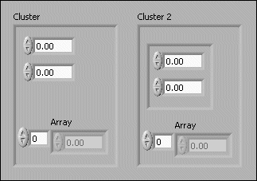 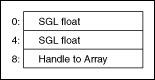
LabVIEW stores waveforms like clusters.
LabVIEW stores refnums as signed 32-bit integers.
LabVIEW stores variants as handles to a LabVIEW internal data structure. Variant data is made up of 4 bytes.